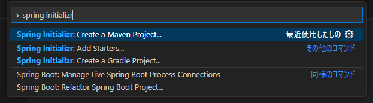
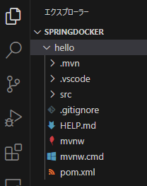
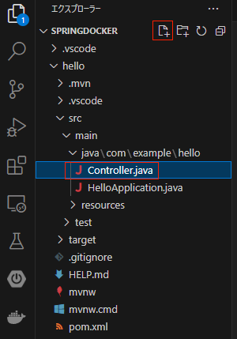
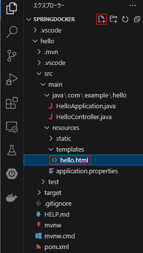
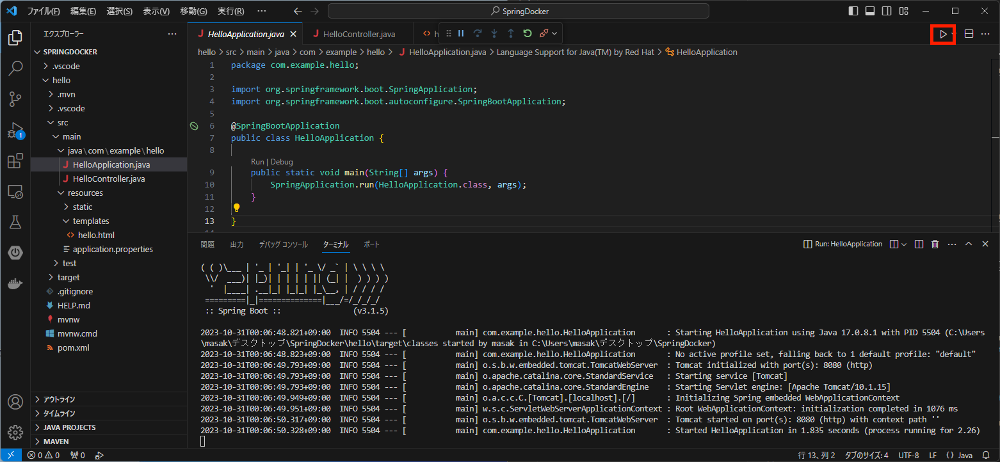
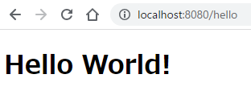
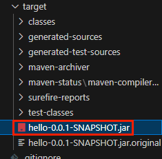
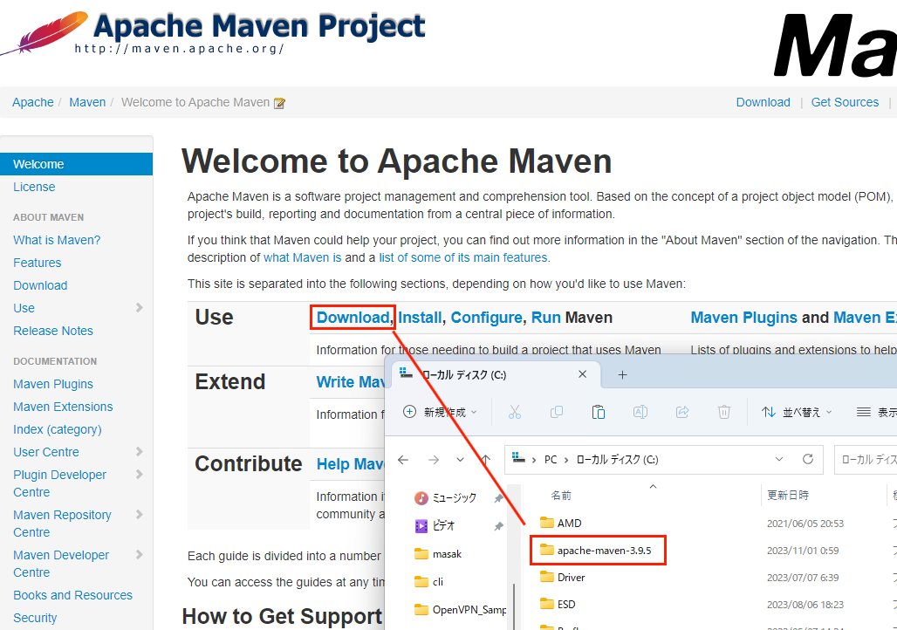

Spring BootをDocker上で動かす
Spring Bootで作成したHello WorldをJarファイルにビルドして、コンテナイメージ化する。
↓ディレクトリ構成（一部省略）
SpringDocker
├── Dockerfile
└── hello // Spring Boot プロジェクディレクトリ
├── pom.xml
├── src
│ ├── main // Javaファイル、htmlファイルはここに作成
│ │ ├── java/com/example/hello
│ │ │ ├── HelloApplication.java
│ │ │ └── HelloController.java
│ │ └── resources/templates
│ │ └── Hello.html
│ └── test
└── target // ビルドしたjarファイルはここに格納される
└── hello-0.0.1-SNAPSHOT.jar
Spring Bootアプリの作成
Spring InitializrからMavenプロジェクトを作成 
Spring Boot version: 3.15
project language: Java
Group Id: com.example
Artifact Id: hello
packaging type: Jar
Java version: 17 ※Dockerイメージ作成するときに合わせる必要があるので注意
dependencies: Tymeleaf、Spring Web、Lombok、Spring Boot DevTools
上記は例なので適宜変更すること
完了するとプロジェクトが作成される

Controller、htmlの作成
HelloController.javaを新規作成する

HelloController.java
package com.example.hello;
import org.springframework.stereotype.Controller;
import org.springframework.web.bind.annotation.GetMapping;
@Controller
public class HelloController {
@GetMapping("/hello") # localhost:8080/hello でアクセス来たらhelloworld()を実行
public String helloworld() {
return("Hello"); # ~src/main/resources/templates/Hello.html をreturn
}
}
Hello.htmlを新規作成する

<!DOCTYPE html>
<html>
<head>
<meta charset="UTF-8">
<title>Sample</title>
</head>
<body>
<h1>Hello World!</h1>
</body>
</html>
動作確認
HelloApprication.javaを実行

ブラウザからアクセスして確認

Mavenでビルド SpringBootのソースディレクトリ（pom.xmlがあるところ）でビルドコマンド実行
mvn package spring-boot:repackage
targetフォルダに.jarファイルが生成される

コンテナイメージ作成
Dockerfileを作成
# FROM：ベースイメージの指定
# Spring InitializrでJava17を指定したので合わせる
FROM openjdk:17-jdk-slim
# RUN：イメージ作成時に実行されるコマンド
# AP格納ディレクトリを作成
RUN mkdir hello
# WRKDIR：この命令以降は、指定したディレクトリで操作される
WORKDIR /hello
# COPY：コンテナ内にファイルコピー
# ビルドした.jarをapp.jarというファイルでコピー
COPY ./hello/target/*.jar app.jar
# EXPOSE：コンテナが特定ポートをlistenしている事をDockerに通知
EXPOSE 8080
# ENTRYPOINT：コンテナ実行時に実行するコマンド
# ※複数行書いても一番最後の行しか実行されない
ENTRYPOINT ["java","-jar","app.jar"]
ENTRYPOINTは2種類の記載方法があり、exec形式が推奨されている
# シェル形式
ENTRYPOINT command param1 param2
# exec形式
ENTRYPOINT ["executable", "param1", "param2"]
exec形式とすることで、コマンドがシェルによって解釈される事なく直接実行されるため、 コマンドがシェルの環境変数やエイリアスに影響されずに実行可能
ビルドの実行
次のビルドコマンドは.(カレントディレクトリ)を指定しているため、
作成したDockerfileと同ディレクトリで実行すること
# ビルド
docker build \
--no-cache \
--tag app-hello-spring-boot:latest .
# イメージの確認
docker images
-----------------
REPOSITORY TAG IMAGE ID CREATED SIZE
app-hello-spring-boot latest 96f90e7c2bfe About a minute ago 408MB
コンテナ起動確認
docker run --rm \
--publish 8080:8080 \
--name app-local \
app-hello-spring-boot
--rmオプション：コンテナ停止時にコンテナ削除してくれるので便利（imageは消えない）-dオプション：バックグラウンドで実行してくれる
ブラウザでhttp://localhost:8080/helloにアクセスしてhello worldが表示できることを確認
-dオプションを指定しなかった場合はCtrl+Cで終了
参考
Apache Maven インストール（Windows）
Apache Maven サイトから、
Binary zip archiveをダウンロード&展開し、C:\直下に配置 システム環境変数Pathに
C:\apache-maven-3.9.5\binを追加mvn -vコマンドを実行してインストールされていることを確認